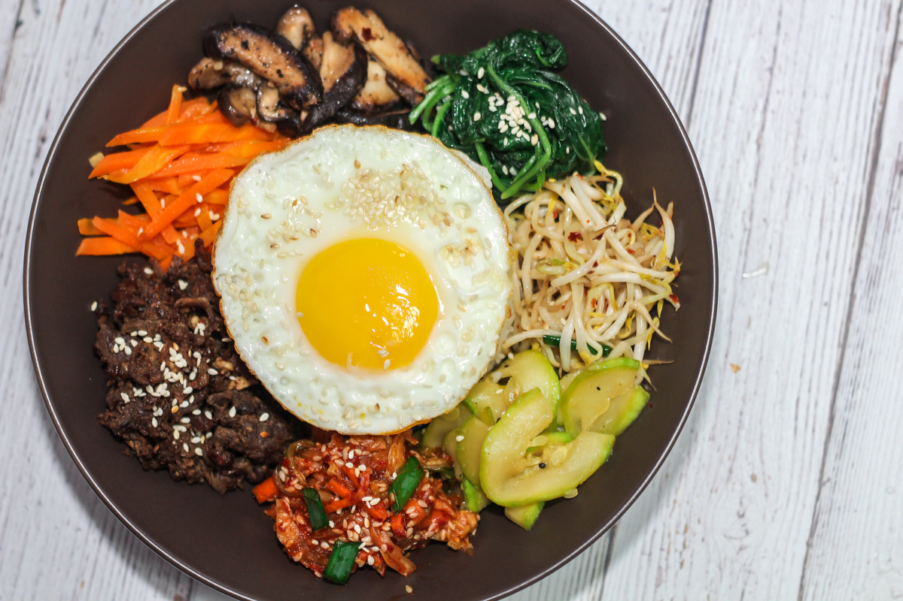

What is it?

Place your cursor over the writing to make it bigger!
Use this recipe to make arguably the best known Korean dish around the world: bibimbap. What makes this meal
stand out? Not only is it a Korean classic, but it's also delicious, gorgeous on the plate, and easily
tweaked for different palates and spice levels. That means if you're a typical American or Westerner who
can't handle foods that are extremely spicy, homemade bibimbap is the dish for you since you can easily
lower the spice load.
The bottom line is that if you're a true fan of Korean cuisine, you should know how to make this dish, or at
least try it. Bibimbap is to Korean cuisine what apple pie is to American cuisine.